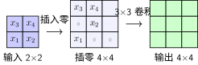

U 形架构详解#
直觉：U-Net 的整体结构#
引言：图像分割问题 我们提出了核心问题：如何把缩小的特征图恢复回原始分辨率，同时不丢失空间细节？
U-Net[RFB15] 的答案是一个对称的 U 形：

U-Net 的 U 形对称架构#
架构速览#
从图中可以看出核心设计：左侧编码器逐步下采样（空间缩小、通道增加），右侧解码器逐步上采样（空间恢复、通道减少），底部是信息瓶颈，灰色箭头是跳跃连接。
几个关键数字：
输入 572×572×1 → 输出 388×388×2（有效填充导致边界丢失 92 像素）
通道数变化：1 → 64 → 128 → 256 → 512 → 1024 → 512 → … → 64 → 2
每层跳跃连接拼接：编码器特征（保留精确位置）与解码器特征（携带语义信息）在通道维度拼接
三部分的角色#
部分 |
做什么 |
效果 |
|---|---|---|
编码器（左半） |
卷积+池化，逐步下采样 |
空间变小，通道变多，语义变强 |
瓶颈（底部） |
最深的卷积，特征最抽象 |
感受野最大，知道"整体是什么" |
解码器（右半） |
转置卷积+跳跃拼接，逐步上采样 |
空间变大，恢复细节 |
编码器路径：提取语义#
编码器和 LeNet-5架构详解 前半部分几乎一样——重复的卷积块 + 最大池化。
编码器的直觉
每一步都在做"退一步看全局"：
3×3 卷积看局部模式（边缘、纹理）
2×2 池化取最显著特征，空间减半
通道数加倍，给更多"记忆空间"存储提炼出的信息
就像写摘要：先逐段阅读（卷积），再浓缩成要点（池化）。反复几次后，你就从具体的文字得到了文章主旨。
编码器中的感受野#
感受野 中我们学了感受野的递推公式。U-Net 中每个编码器块的感受野：
层 |
累积感受野 |
看到什么 |
|---|---|---|
第 1 层 |
3×3 |
边缘、角点、纹理 |
第 2 层 |
5×5 |
简单的形状组合 |
第 3 层 |
9×9 |
局部结构模式 |
第 4 层 |
17×17 |
较大的语义部件 |
底部 |
33×33 |
完整的语义对象 |
感受野逐层扩大，意味着一路向下，每个神经元看到的输入区域越来越大，学到的特征从"具体边缘"变成了"抽象语义"。
特征图尺寸变化公式#
原始 U-Net 用有效填充，每步卷积后尺寸变化为：
其中 \(k=3\) 是卷积核大小，所以每次卷积后宽高各减 2。池化后尺寸减半。
解码器路径：恢复空间#
解码器是编码器的"镜像"——把缩小的特征图一步步放大回原始分辨率。核心操作有两个：
1. 上采样（Upsampling）#
U-Net 使用转置卷积（Transposed Convolution） 进行上采样。直觉上，它和卷积做的事相反：

转置卷积：2×2 → 4×4
转置卷积的直觉
普通卷积：3×3 窗口滑过输入 → 输出更小 转置卷积：每个输入点"膨胀"成 2×2 区域 → 输出更大
转置卷积通过在每个输入元素之间插入零值，然后做标准卷积来实现尺寸加倍。它的参数也是可学习的，不像双线性插值是固定的。
2. 跳跃连接（Skip Connection）#
这是 U-Net 的灵魂。上采样后的特征图与编码器对应层的特征图在通道维度上拼接（concatenate）。
为什么拼接而不是相加？
FCN 用相加，U-Net 用拼接。拼接保留了编码器特征的全部信息（不压缩），让解码器可以"看到"原始细节。
跳跃连接的三个作用
保留空间信息：编码器浅层知道"边缘在第 35 行"，解码器需要这个信息
改善梯度流动：梯度可以"抄近道"直接传到浅层，缓解梯度消失
多尺度特征融合：不同感受野的特征同时被利用
跳跃连接的梯度分析#
跳跃连接对训练的最大贡献是解决了梯度消失问题。梯度消失（Vanishing Gradient） 中我们详细讨论过梯度消失的成因——反向传播时梯度经过多层连乘会指数级衰减，导致浅层无法学习。
要理解跳跃连接为什么能缓解这个问题，需要先理解 定义：Jacobian 矩阵 的概念（详见 反向传播算法）。核心洞察是：深层网络的梯度计算等于多层 Jacobian 矩阵的连乘。
没有跳跃连接时：Jacobian 连乘#
链式法则告诉我们，损失 \(L\) 对第 \(l\) 层权重 \(W_l\) 的梯度相当于每一层 Jacobian 的连乘：
每乘一个 Jacobian 都可能缩小或放大梯度。如果每层的"放大倍数"都小于 1，\(L-l\) 个 Jacobian 连乘后梯度就会指数级衰减——梯度消失。
有了跳跃连接：梯度抄近道#
跳跃连接在反向传播中创建了一条直达路径，绕过了中间的深度：
第二条路径的 Jacobian 链极短——编码器第 2 层的梯度可以通过跳跃连接直接传到解码器第 2 层，中间只经过 1-2 个变换，而不是从底部绕上来的 8-10 个。
数值对比：64 倍的差距
假设每层 Jacobian 的放大倍数 = 0.8：
原始路径（穿过 20 层）：\(0.8^{20} \approx 0.01\)（衰减了 99%）
跳跃路径（只穿过 2 层）：\(0.8^{2} \approx 0.64\)（只衰减了 36%）
差距：\(0.01\) vs \(0.64\)，整整 64 倍。有了跳跃连接，浅层收到的梯度信号强了几十倍。
这就是跳跃连接被称为"梯度高速公路"的原因——它为梯度提供了绕过深度、直达浅层的捷径。这个思路与 ResNet [HZRS16] 的残差连接一脉相承：都是通过短路连接为梯度创造高速公路。实验设计 中的消融实验也可以验证：去掉跳跃连接后，深层网络的浅层几乎学不到东西。
输出层设计#
输出层用 1×1 卷积把通道数映射到类别数：
对于二分类任务（如细胞 vs 背景），\(C_{\text{out}} = 2\)，后接 softmax。每个像素的 2 个值表示"属于背景的概率"和"属于细胞的概率"。
为什么 U 形架构这么成功？#
回顾 引言：图像分割问题 中讨论的核心矛盾，现在看 U-Net 如何一一解决：
矛盾 |
编码器的做法 |
解码器的做法 |
跳跃连接的作用 |
|---|---|---|---|
需要语义理解 |
下采样扩大感受野 |
- |
深层特征传到解码器 |
需要空间精度 |
浅层保留边缘信息 |
- |
浅层特征直接"抄近道" |
需要端到端训练 |
- |
可学习的上采样 |
梯度直达浅层 |
三个组件缺一不可。没有解码器，输出分辨率不够；没有跳跃连接，恢复的细节不够；没有编码器，没有语义理解。
嵌入核心代码：核心组件#
下面先看 U-Net 的四个核心组件，完整的 U-Net 组装会在 完整实现 中展示。
双卷积块（核心构建单元）#
class DoubleConv(nn.Module):
"""U-Net 中的基本构建单元：两个 3×3 卷积
参数量计算（输入 C_in，输出 C_out）：
第一个卷积: C_in × 3 × 3 × C_out
第二个卷积: C_out × 3 × 3 × C_out
总计: 9 × (C_in × C_out + C_out²)
例如 64→64: 9×(64×64+64²) = 73,728
"""
def __init__(self, in_channels, out_channels):
super().__init__()
self.conv = nn.Sequential(
nn.Conv2d(in_channels, out_channels, kernel_size=3, padding=1),
nn.BatchNorm2d(out_channels),
nn.ReLU(inplace=True),
nn.Conv2d(out_channels, out_channels, kernel_size=3, padding=1),
nn.BatchNorm2d(out_channels),
nn.ReLU(inplace=True)
)
def forward(self, x):
return self.conv(x)
为什么两个 3×3 卷积堆叠？
一个 3×3 卷积感受野是 3×3。堆叠两个 3×3，感受野变成 5×5（感受野 的递推公式）。但参数量比一个 5×5 少——\(2 \times 9 \times C^2\) vs \(25 \times C^2\)，减少了 28%。如果堆叠三个 3×3，感受野达到 7×7，参数比一个 7×7 减少 45%。这个设计思路最早来自 VGG 网络 [SZ15]——用小卷积核的堆叠代替大卷积核，在保证感受野的同时减少参数。
每个卷积后接一个 BatchNorm [IS15]，作用是稳定训练：把激活值拉回到零均值单位方差，防止深层网络的激活值剧烈漂移。
下采样模块#
class DownSample(nn.Module):
"""编码器下采样：MaxPool → DoubleConv
输入: (B, C_in, H, W )
输出: (B, C_out, H/2, W/2)
"""
def __init__(self, in_channels, out_channels):
super().__init__()
self.maxpool_conv = nn.Sequential(
nn.MaxPool2d(2),
DoubleConv(in_channels, out_channels)
)
def forward(self, x):
return self.maxpool_conv(x)
上采样模块（带跳跃连接）#
class UpSample(nn.Module):
"""解码器上采样：转置卷积 → 跳跃拼接 → DoubleConv
输入 x1: (B, C_dec, H, W )
输入 x2: (B, C_enc, 2H, 2W )
输出: (B, C_out, 2H, 2W )
转置卷积把 C_dec 减半、尺寸加倍；
拼接编码器特征后，DoubleConv 缩回 C_out
"""
def __init__(self, in_channels, out_channels):
super().__init__()
self.up = nn.ConvTranspose2d(
in_channels, in_channels // 2, kernel_size=2, stride=2
)
self.conv = DoubleConv(in_channels, out_channels)
def forward(self, x1, x2):
x1 = self.up(x1)
# 原始 U-Net 用有效填充，尺寸可能不匹配，需要填充对齐
diffY = x2.size()[2] - x1.size()[2]
diffX = x2.size()[3] - x1.size()[3]
x1 = F.pad(x1, [diffX // 2, diffX - diffX // 2,
diffY // 2, diffY - diffY // 2])
# 跳跃连接：通道拼接
x = torch.cat([x2, x1], dim=1)
return self.conv(x)
输出层#
class OutConv(nn.Module):
"""输出层：1×1 卷积
输入: (B, C_in, H, W)
输出: (B, n_classes, H, W)
1×1 卷积不改变空间尺寸，只改变通道数
"""
def __init__(self, in_channels, out_channels):
super().__init__()
self.conv = nn.Conv2d(in_channels, out_channels, kernel_size=1)
def forward(self, x):
return self.conv(x)
参考文献#
Kaiming He, Xiangyu Zhang, Shaoqing Ren, and Jian Sun. Deep residual learning for image recognition. In Proceedings of the IEEE conference on computer vision and pattern recognition, 770–778. 2016.
Sergey Ioffe and Christian Szegedy. Batch normalization: accelerating deep network training by reducing internal covariate shift. In International conference on machine learning, 448–456. PMLR, 2015.
Olaf Ronneberger, Philipp Fischer, and Thomas Brox. U-net: convolutional networks for biomedical image segmentation. In Medical Image Computing and Computer-Assisted Intervention (MICCAI), 234–241. Springer, 2015.
Karen Simonyan and Andrew Zisserman. Very deep convolutional networks for large-scale image recognition. In International Conference on Learning Representations. 2015.
贡献者与修订历史
查看详细修订记录
-
2dc78ed2026-05-09 - Heyan Zhu: fix: address latex errors when building pdf -
f159d562026-05-08 - Heyan Zhu: fix: address complaints from the linter -
15d1b152026-05-03 - Heyan Zhu: docs(model-architecture-design): add new chapter on CNN architecture design methodology -
b55c3842026-05-01 - Heyan Zhu: docs: fix document cross-references and add anchor tags -
b5e265a2026-04-28 - Heyan Zhu: docs(unet): restructure documentation and update content -
0c291d72025-12-10 - Heyan Zhu: docs: restructure course materials and add new content